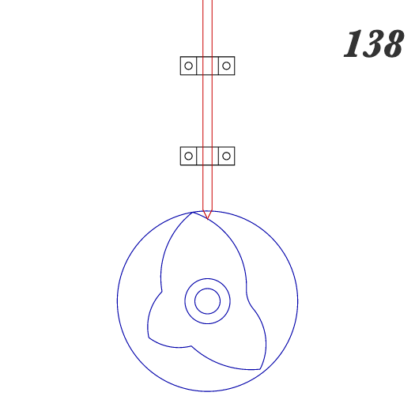

<br>
### Week 3: Kinetic Sculpture
This week's project was to create a kinetic sculpture. I started the week with exactly 0 ideas, but after some chatting with other students in the course, I decided to make a garden box: a box with flowers and a gopher that move up and down. At first, I was thinking I'd scatter the flowers/gopher throughout the box, but Nathan pointed out that it would be challenging to translate the motor movement across multiple rows of objects. I figured that making just one thing move was a big enough challenge for this week, so I decided to stick do just one moving flower for this week. Hopefully, over the next couple weeks, I'll be able to iterate this sculpture and reach a final version closer to my original conception.
Here's an initial (very rudimentary) sketch of my idea:
<img src="./Sketch1.jpg" alt="Garden box sketch" width="400"/>
I started by thinking about how I could link the motor movement to the vertical movement of the flower. I enjoyed looking through the 507 Mechanical Movements [reference](http://507movements.com/) and found that number 138 could work really well. I could attach a shaft to the motor shaft, laser cut the cam and slide it onto the shaft, and use the rotation of the cam to drive the flower up and down. The irregular cam would let me customize the movement of the flower and make it look more organic.

I'll make the rod out of a wooden skewer sharpened to a point and I'll cut the cams out of acrylic to minimize friction between the pieces. As far as sticking all the pieces of this project together, I'm keeping it pretty basic for this round of the sculpture, partially because I'd like to test this out in a more rapid way to make sure it actually works and partially because I was sick all weekend, which limited my ability to work on this project a ton. This sketch illustrates how I'm imagining all the pieces coming together:
<img src="./Sketch2.jpg" alt="More fleshed out garden box sketch" width="400"/>
To attach the motor to the sculpture, I'll either hot glue it in place or make a tight cardboard housing and wedge the motor in place. I'll attach the motor shaft to a wooden skewer using heat shrink to extend the shaft to an appropriate length. To restrict the flower's movement to the z axis only, I'll poke or drill a small hole in the top that's just big enough for the flower skewer to fit through. The bottom of the flower skewer will make contact with the cam, such that when the cam rotates, the flower moves up and down.
This left me with the final challenge of stabilizing the bottom of the flower skewer. If I were to make the box exactly as sketched, I'm pretty sure the flower skewer would just flop around. I came up with a quick solution that should work: just a piece of cardboard bent in an arch over the cam and hot glued to the bottom of the box. I'd poke a small hole in this arch so that it could manage the skewer's movement. I could probably achieve something similar by laser cutting an acrylic ring that sits around the cam, but this solution seems faster and easier to adjust.
<img src="./Sketch3.jpg" alt="Cardboard arch over cam" width="400"/>
Finally, I had to figure out what to make for the flower itself. I decided to laser cut a cardboard piece in the shape of a flower, then vinyl cut a sticker to lay on top of it to maximize the flower look. In the future, it would be fun to 3D print something that actually looks like a realistic flower!
With the plan in place, I moved on to drawing everything in Fusion. To make the box, I started with a design that I've used before for laser cut boxes: cutting tabs and corresponding indendations into each face of the box. Theoretically, this should let the pieces slot securely together without needing another adhesive. Fusion's ability to make rectangular patterns and mirror symmetry helped me get the tabs done quickly. I went pretty fast and loose with all the measurements here. The specifics don't really matter, as long as the box is big enough to fit everything and the wooden shaft is long enough to span the entire width of the box, such that it can slot into a hole on the box face opposite the motor to help support the shaft. Here's my initial sketch of the pieces:
<img src="./Sketch4.jpg" alt="3D model of box pieces" width="400"/>
I cut the pieces out and they're cute! They fit together okay, but cutting them out made me realize that cardboard is not an ideal material for this style of box, which I'd only made out of wood for previous projects. The cardboard is a little too flexible, making the tabs not want to fit together particularly well.
<img src="./Box_1.jpg" alt="Laser cut cardboard box pieces fit together" width="400"/>
Since we have access to plenty of hot glue, I decided to ditch the tabs and just laser cut plain squares that could be hot glued together. Additionally, after measuring the motor, I realized it wouldn't quite fit into the box. I did a quick sketch and made all the pieces identical squares with sides of 10 cm.
I moved on to designing and laser cutting the cams. I created two designs: one that's pretty regular, and one that's more organic. I used Fusion's circular pattern function to draw the regular cam (just drew a curve and made a 4-repeat circular pattern then trimmed the extra lines) and drew a somewhat random shape for the irregular one. I made these two designs to test which would work better. My hope is that the irregular one works well because it'll allow me to make the flower movement more inconsistent (which means more fun)! I added a hole in the center of each cam that was the diameter of the wooden skewer I'm attaching to the motor. Then, I laser cut them out of acrylic. I cut two of each cam such that I could place the two identical cams next to each other and the wooden skewer holding the flower could rest in the indentation between the two cams.
<img src="./Cams.jpg" alt="Laser cut cams made of acrylic" width="400"/>
Next, I cut and stripped two wires so I could solder them to the motor. I started by bending each wire around its corresponding connection point using pliers to create a physical connection. I then soldered them in place. I usually love soldering, but this was a bit of a pain because the motor connection points are so tiny. After a few tries, though, I got it to work! I then hot glued over the connection to stabilize it.
<img src="./Soldered_motor.jpg" alt="Motor with two wires soldered to it" width="400"/>
Once that was set and tested, I used heat shrink to attach the wooden skewer to the motor shaft. There are more elegant ways to do this, but it was a fast and effective method for this project.
<img src="./Motor_shaft.jpg" alt="Skewer attached to motor shaft with heat shrink" width="400"/>
Lastly, I laser cut the flower from cardboard and used the vinyl cutter to make this flower sticker. It came out so cute but taking each of those tiny pieces out of the vinyl was a pain. Next time, I'll use a design with fewer tiny holes.
<img src="./Flower.jpg" alt="Red flower sticker on cardboard flower" width="400"/>
Finally, all the pieces were in place. It was time for assembly!